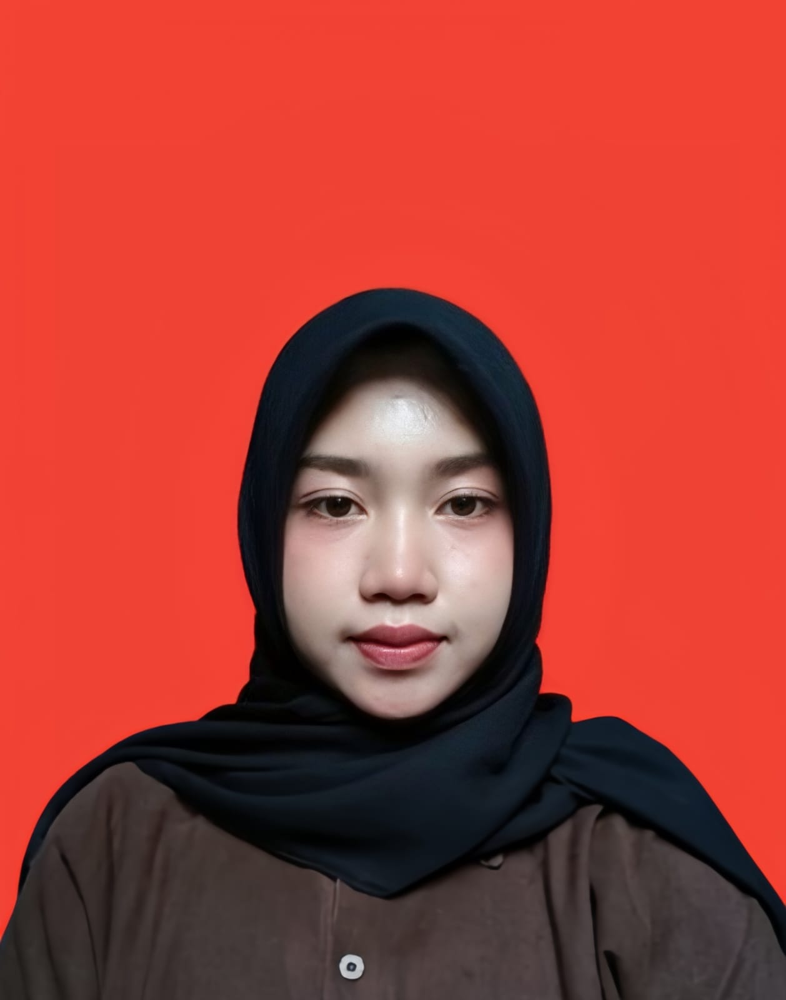

Folder 01
01 – Design
Selected graphic design projects, visual branding, posters, banners, and creative product designs.
Hello, I'm
Information Technology Education Student
Mahasiswa Pendidikan Teknologi Informasi yang memiliki ketertarikan pada desain digital, UI/UX design, pengembangan web, dan teknologi kreatif. Memiliki semangat untuk terus belajar, mengembangkan keterampilan, serta menghasilkan karya yang kreatif dan bermanfaat.

Tyas Syafa Pratiwi
Foto belum ditemukanSaya merupakan mahasiswa S1 Pendidikan Teknologi Informasi Universitas Lampung yang memiliki ketertarikan pada dunia desain digital, teknologi, dan pengembangan aplikasi berbasis web. Saya senang mempelajari hal baru, mengeksplorasi ide kreatif, serta mengembangkan kemampuan melalui berbagai proyek akademik maupun mandiri.
Saya memiliki pengalaman dalam membuat desain grafis, merancang antarmuka menggunakan Figma, mengerjakan proyek pengembangan game berbasis web, serta berkolaborasi dalam proyek akademik. Saya terus berupaya meningkatkan keterampilan dan memperluas pengalaman untuk menghasilkan karya yang lebih baik.
Seluruh arsip proyek dikelompokkan ke dalam empat kategori utama yang terhubung langsung ke folder Google Drive masing-masing.
Selected graphic design projects, visual branding, posters, banners, and creative product designs.
User interface and user experience projects, including interface exploration, layout design, and digital product concepts created using Figma.
Web-based projects and interactive digital experiences, including personal development projects and 3D web-based games.
Certificates of participation, training programs, workshops, and learning experiences that support my personal and professional development.
Beberapa sorotan proyek desain, antarmuka pengguna, dan pengembangan aplikasi web yang terhubung langsung ke file Google Drive.
Eksplorasi desain komunikasi visual berupa poster publikasi, banner kegiatan, dan identitas visual produk dengan komposisi tipografi modern.
Perancangan antarmuka pengguna dan alur pengalaman (user flow) interaktif berbasis Figma yang berfokus pada kemudahan navigasi dan estetika bersih.
Pengembangan gim interaktif 3D berbasis web yang menggabungkan logika pemrograman, desain lingkungan visual, dan pengalaman bermain di browser.
Pengembangan website responsif dan sistem informasi berbasis web untuk kebutuhan proyek akademik maupun eksplorasi teknologi front-end modern.
Dokumentasi partisipasi pelatihan, workshop, dan program sertifikasi pengembangan kompetensi. Klik tombol di bawah untuk membuka dokumen di Google Drive.
Terbuka untuk peluang magang, proyek kolaborasi desain UI/UX, pengembangan web, maupun diskusi seputar teknologi kreatif.